People want to reflect on their mood and mental state daily, but have no guided framework to do it consistently.
Most organisational wellness tools are rejected by users because they fear their personal reflections are being read by managers.
Standalone mood apps capture a single moment but never correlate sleep, stress, activity, and behaviour over time.
Admins or counsellors have no visibility into who may need a gentle check-in — until it's already too late.
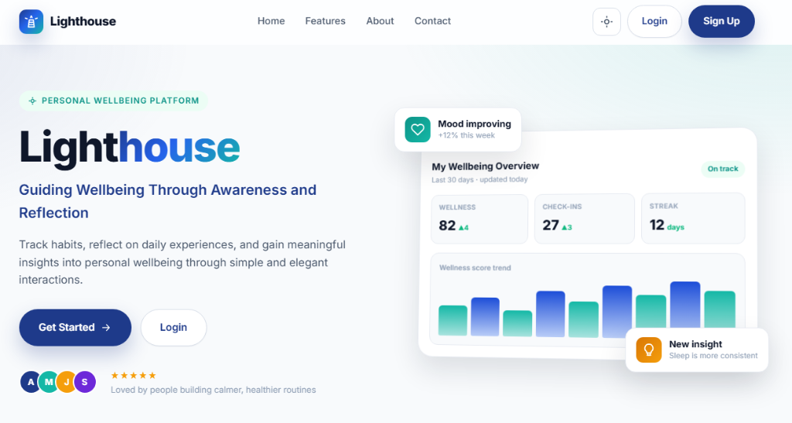
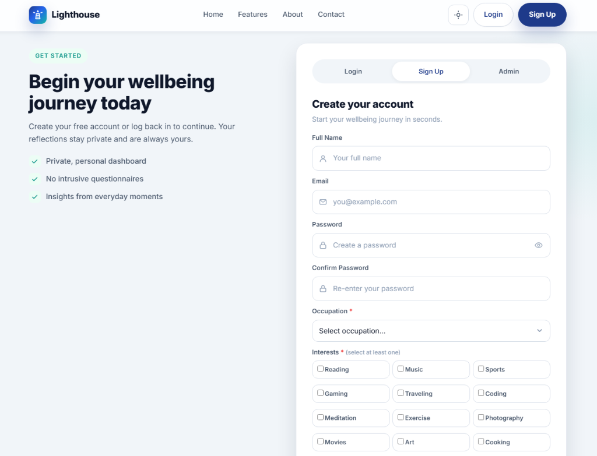
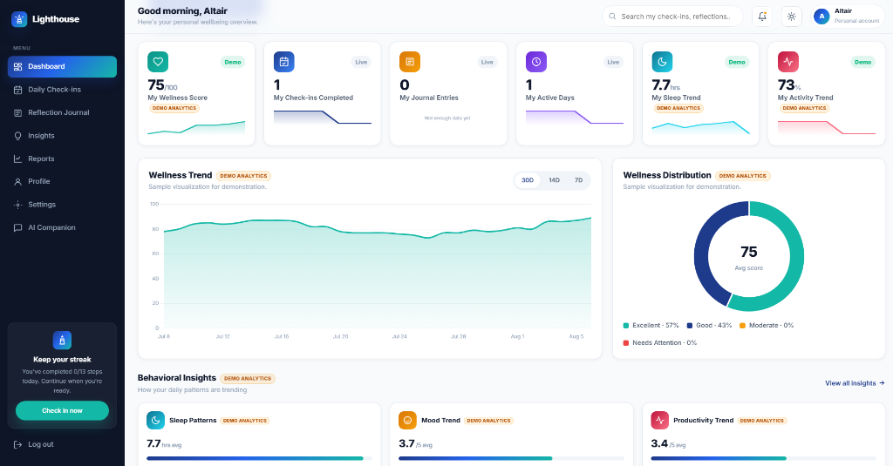
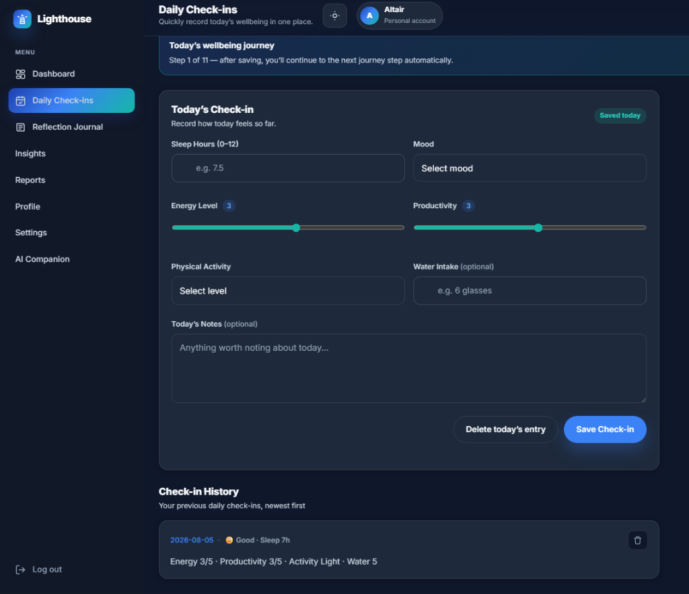
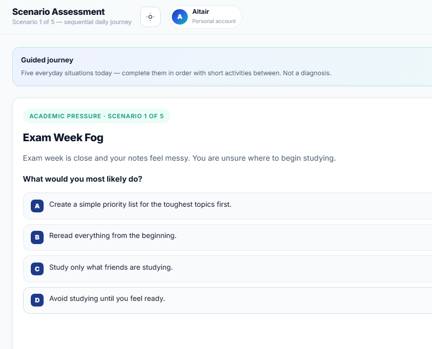
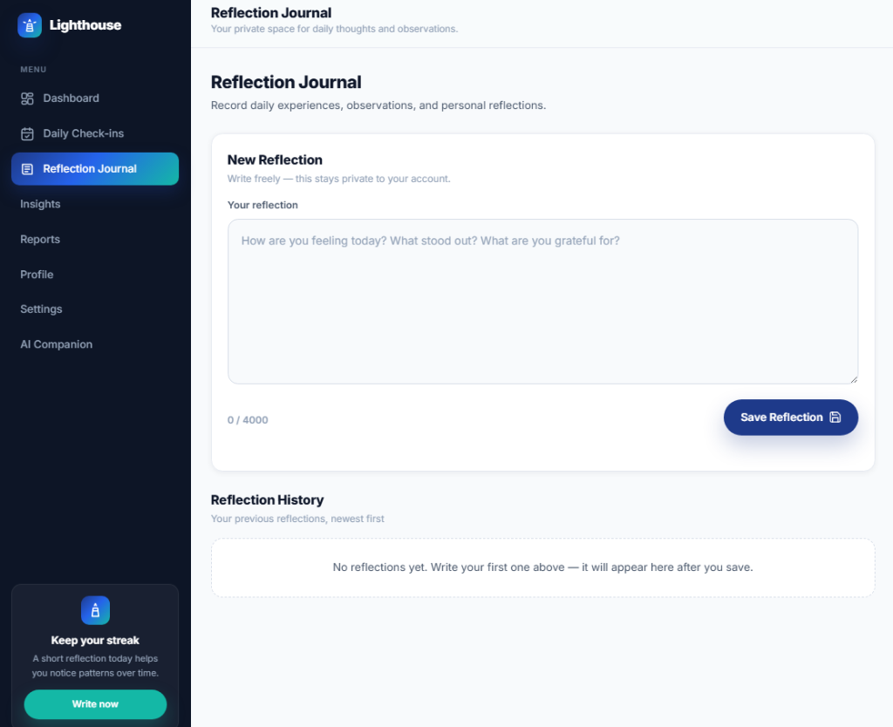
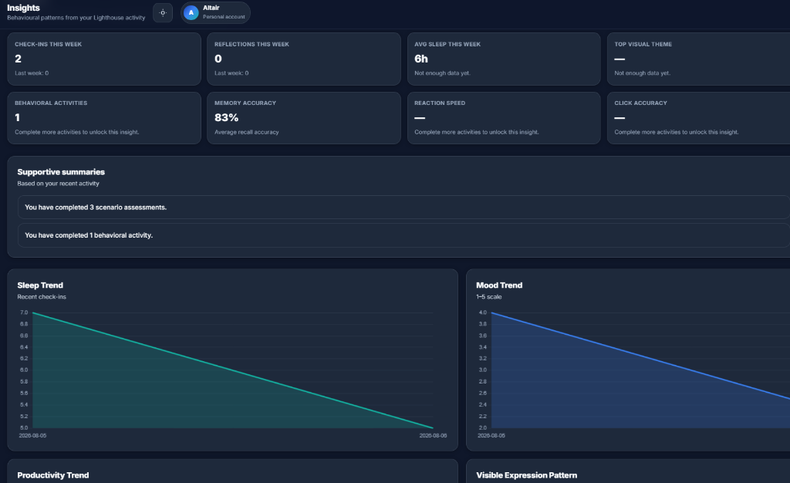
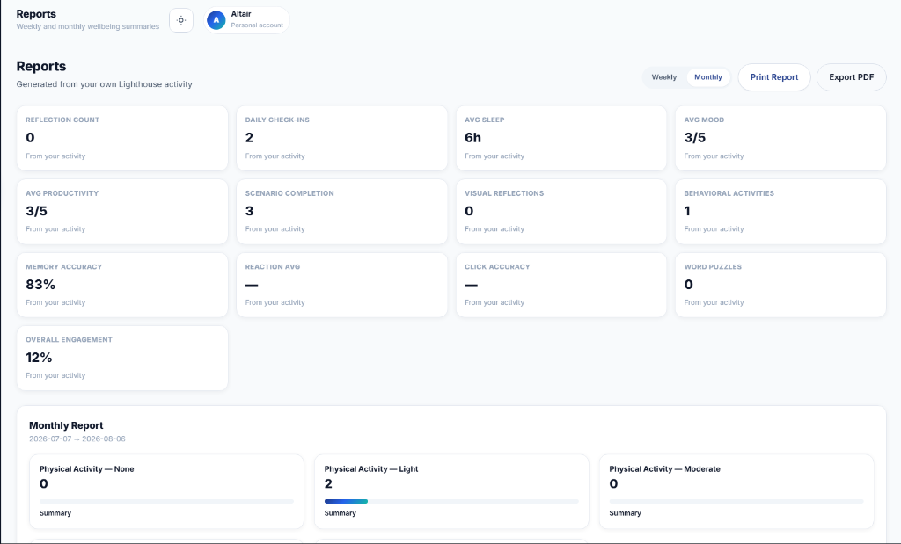
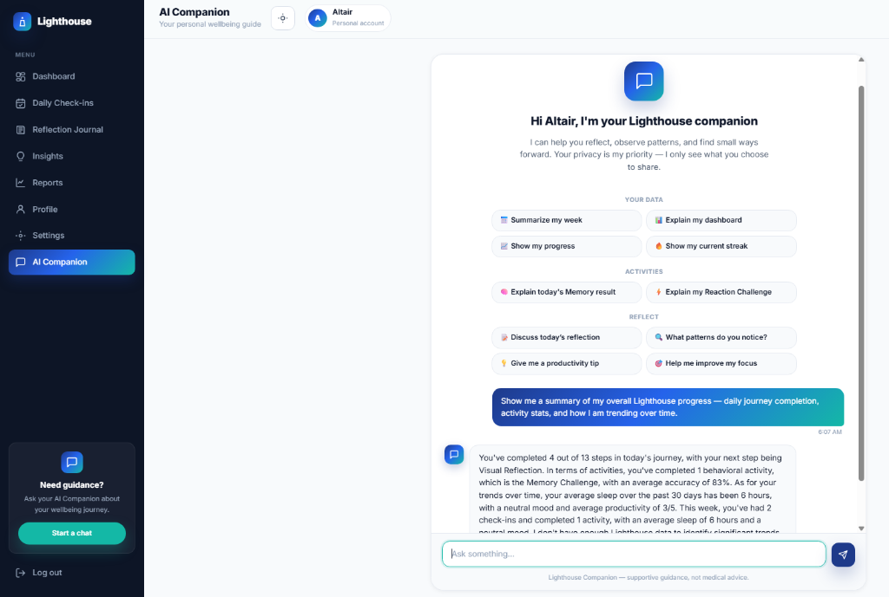
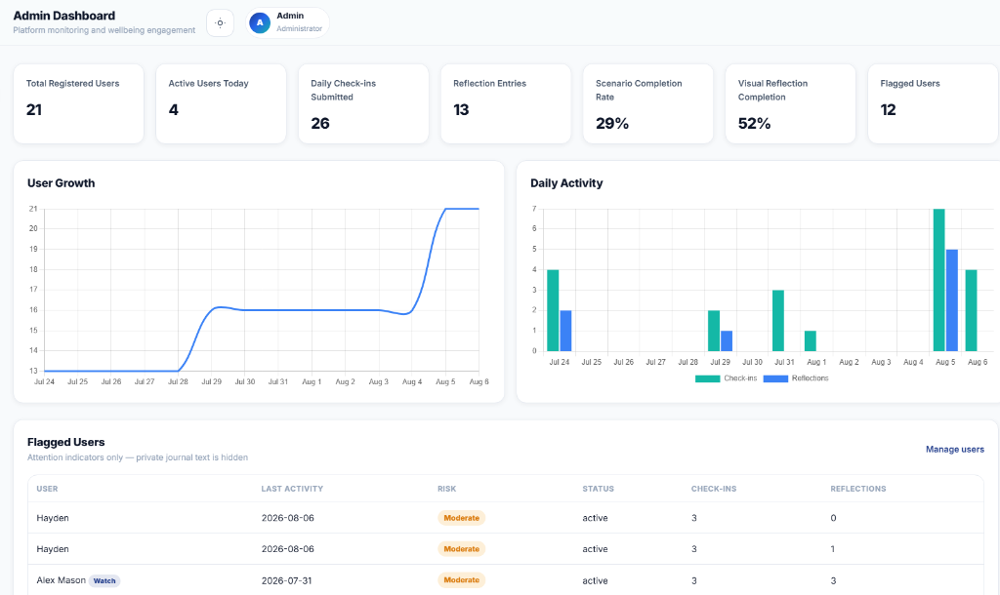
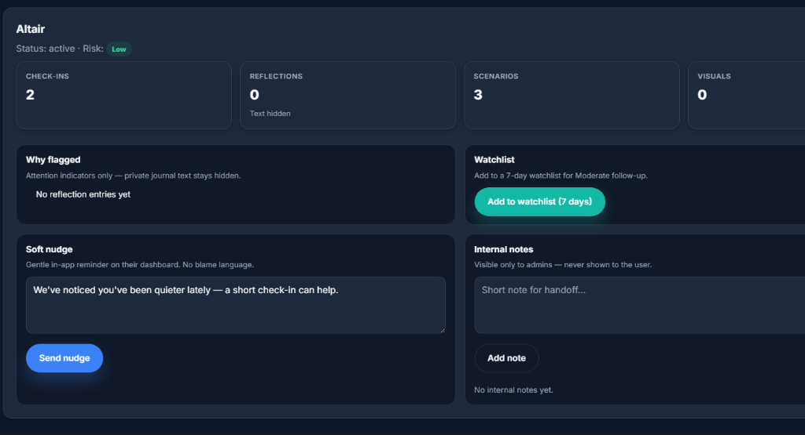
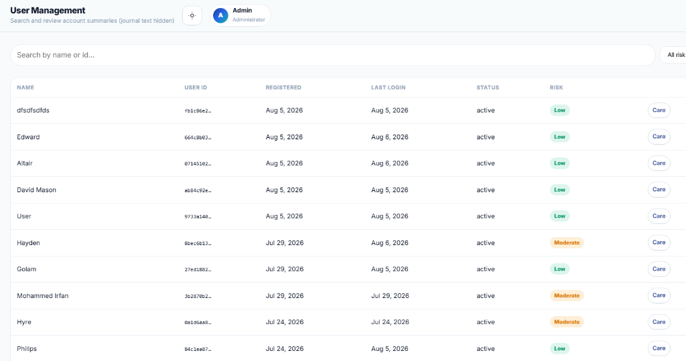
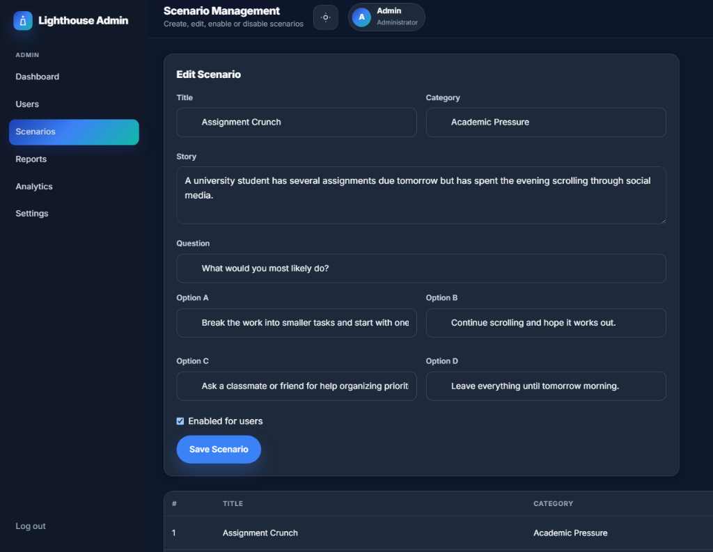
vercel.json. Any static host works — no build step. Supabase config injected via config.js.Guided Daily Habit: A 13-step journey building consistent self-reflection — check-ins, scenarios, behavioural activities, visual, and journal.
Bulletproof Privacy: Supabase RLS means journal entries are cryptographically scoped to the user. Admins see signals, never diaries.
Personal Insights: Longitudinal charts surface mood-sleep-energy correlations that a single-point wellness check could never reveal.
Compassionate Admin Care: Heuristic flagging + soft nudges let admins reach out proactively — as a care tool, not a surveillance tool.
AI Companion: Context-aware Groq-powered assistant grounded in the user's real data — no hallucinated scores, no generic advice.
Future Roadmap: Component framework migration, mobile app, and predictive anomaly detection for admin care signals.